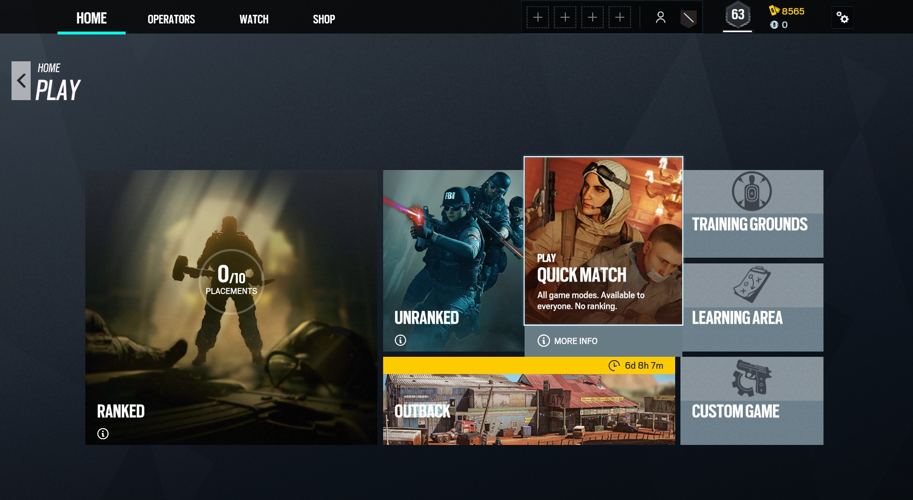
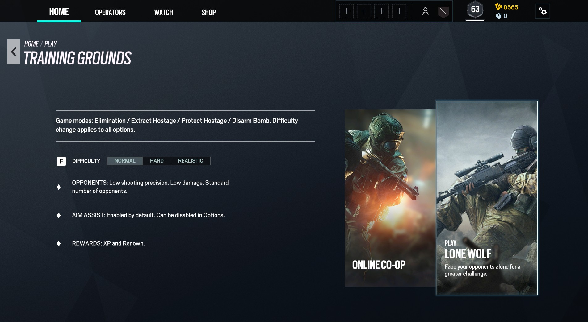
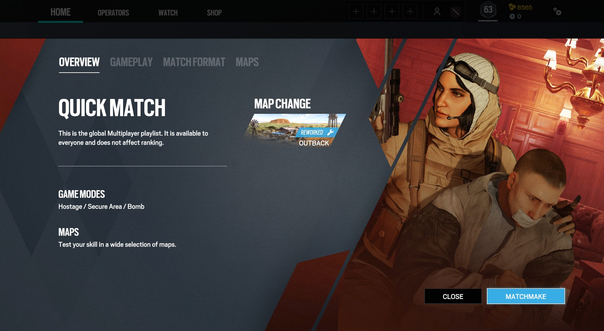
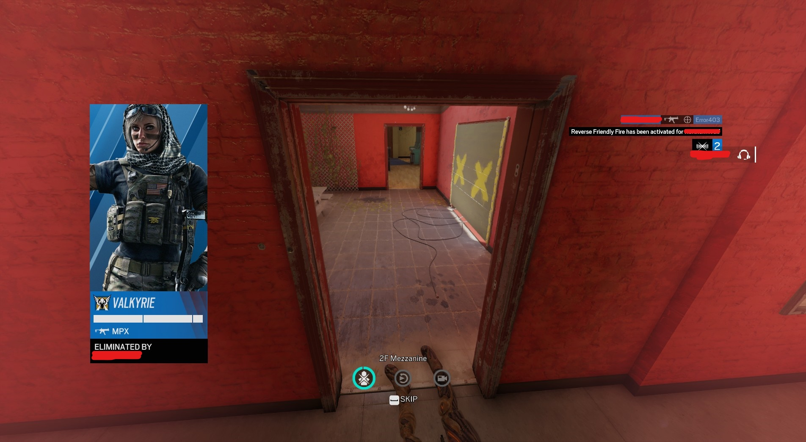
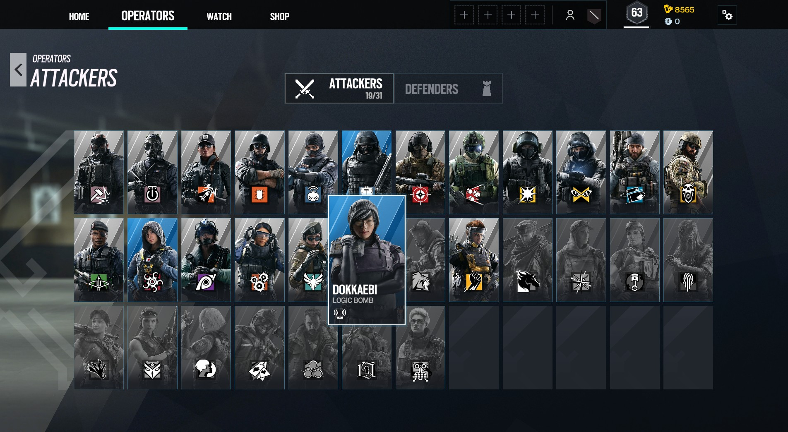
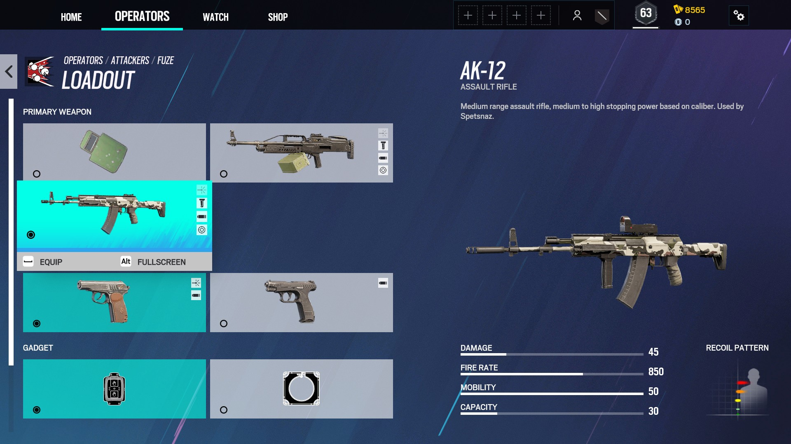
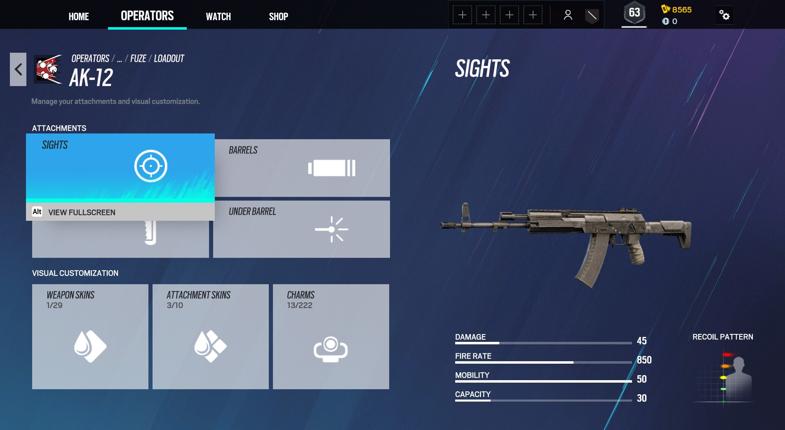

Rainbow 6 Siege: The Basics

https://cdn.cloudflare.steamstatic.com/steam/apps/359550/header.jpg?t=1638378319
Rainbow Six Siege image from Steam.
Welcome to Tom Clancy’s Rainbow Six Siege recruit! Rainbow Six Siege (simply called "Siege" by players) is a tactical shooting game between two factions. The game can be pretty harsh for new players, due to the lack of experience and knowledge. As a result, this article will be going over the 101s of things you should know while playing Siege for the first time.
Heads Up!
The information stated below is based on what I have learned throughout my gameplay. This article may have different information compared to other guides.
Most of the information stated below may not be useful for experienced players, since this article is for the new players.
Game Modes
Screenshot from Liam.
Image showing several Game Modes in Siege.
Tom Clancy's Rainbow Six Siege offers players several different game modes. However, due to the new player's low level, several game modes are not available yet. Such as Ranked, Unranked, and Custom Matches. New players can play the following game modes:
Training Grounds
Screenshot from Liam.
Image showing Training Grounds menu in Siege.
Training Grounds is recommended for players who love to immediately dive into action. This game mode allows you to fight off several AI opponents to your desired difficulty.
Level of difficulties include:
- Normal
- Hard
- Realistic
Depending on the difficulty, the opponent’s aiming ability, the number of hostiles, and the amount of damage you receive are different. You can also receive extra XP if you select a higher difficulty. However, for newcomers normal difficulty is recommended. Even several experienced players still struggle to complete the objective in normal difficulty. No need to be ashamed.
There are also several different battle situations available for Training Grounds, such as:
- Elimination
- Eliminate all hostile/enemies in objective
- Extract Hostage
- Extract the hostage captured by the hostile
- Pretect Hostage
- Defend and protect the hostage from hostile
- Defuse Bomb
- Disarm bomb in objective
There are extra tips and tricks of each battle situation below Quick Match.
Learning Area

Screenshot from Liam.
Image showing Leaning Area menu in Siege.
Learning Area is recommended for new players that wish to learn several different tips and tricks. This will not only let you know what you should be doing in each different situation, but you will also learn how to reinforce and destroy reinforced windows, doors, walls.
There are two different options you can select in Learning Area:
- Situations
- Select a situation out of several options and learn the basics
- The game tells you exactly what to do
- Tutorials
- Learn how to secure and destroy the reinforcements in objective
Quick Match
Screenshot from Liam.
Image showing Quick Match menu in Siege.
Quick Match is the main game mode that every Siege player plays. In a Quick Match, you get to face off other players. The game will be a situational 5 vs 5 players combat. Here is some information you should be knowing when playing Quick Match.
Reverse Friendly Fire
Screenshot from Liam.
Image showing how Reverse Friendly Fire appears during gameplay.
Friendly fire is on, meaning if you shoot your teammates, you will be harming them. You will also receive a Reverse Friendly Fire penalty when you kill your teammate. While this penalty is active, you will be taking the damage instead of the teammate that you are shooting at.
Match Format
Each round in Quick Match will be about 4 - 5 minutes. Before the round starts there is a 1-minute preparation phase where; Attackers use their drones to find the objective, and Defenders secure the objective by reinforcing walls, windows, doors. This time is also used for players to place down their special gadgets.
After the preparation phase, there is a 3 minute round durations. During this time, both teams will be needing to Attack or Defend their objective. Depending on the battle situation there can be overtime in each round. After round 3, Attackers and Defenders will be swapping themselves.
Overtime best of rounds will be enabled when there is a tie in the number of rounds each team has won. Teams will be randomly assigned as Attackers or Defenders and swap sides after each round.
Battle Situations
There are different battle situations, however, the game can also end if either side’s 5 players are all eliminated.
Different types of battle situations include:
- Teams will defend or extract the hostage
- Attackers must locate and extract the hostage to the extraction point
- Defenders must prevent Attackers from extracting the hostage
- Team attack or defend bomb sites
- Attackers must locate and disarm 1 of 2 bombs by planting a defuser
- Defenders must prevent the defuser from being planted or deactivate it when it is already planted
- Teams fight to control a defined area
- Attackers must locate the area, occupy it and hold their position
- Defenders must secure the area and prevent Attackers from intercepting it
Hostage:
Bomb
Secure Area
Operators
There are many operators or also called characters you can choose from the game. Each character will have its unique loadout, and gadget making each one special. If possible, bringing your friends is the best. Your coordination with your friends can easily bring victory to your team.
To unlock operators you must collect credits. You can collect credits by simply playing matches. Winning matches will give you more credits, losing will give you some, but not much.
Screenshot from Liam.
Image showing a list of Attackers.
When purchasing an operator, make sure to get the basic operators (till Dokkaebi in Attackers, till Vigil in Defenders) first. Not only they are cheaper to get compared to other operators, but they also are not bad to use. If used correctly you can definitely bring victory to your team.
Loadouts
Screenshot from Liam.
Image showing Fuze's equipments in Siege.
Every operator has a primary weapon, secondary, and a set of gadgets. As shown in the image above, there are at least 2 options you can select in each category.
Screenshot from Liam.
Image showing possible Weapon Attatchements for the AK-12.
In each primary and secondary weapon, you can select attachments you wish to apply. You can select a sight, barrel, grip, and attachment under the barrel.
Here are some short descriptions of each attachment:
- Used to aim down sights much easier
- Select one that suits you
- I mostly use the red dot, because it is much easier to see your surroundings compared to other sights
- There are also multiplied sights if you wish to use them
- Higher the multiplication = lower the sensitivity
- Used to silence, or prevent recoil on the weapon
- If you choose to go for stealth, the suppressor is recommended
- However, damage dealt with hostile will reduce
- If you choose to reduce recoil, flash hider and muzzle brake is recommended
- For some reason, Ubisoft made flash hiders to be much effective than the muzzle brakes sometimes
- Vertical Grip
- Reduce recoil on the gun
- Angled Grip
- Reduce time aiming into sights
Sights
Barrels
Grips
Gadgets
There are many different gadgets that players can choose to equip. However, each operator has different options available. As an example, Fuze, the character is shown in the image above can only carry a Breach Charge or a Hard Breach Charge. Other operators like Ash, can carry a Breach Charge or a Claymore.
Every operator in-game has a special gadget. These gadgets are what make each operator special to use. With the correct combination, you can destroy the opponent team.
If you wish to learn more about gadgets, try visiting the link here.
Summary
The above is what I have learned while I was playing Tom Clancy’s Rainbow Six Siege. I only explained the very basics of Rainbow Six Siege. If I did; One, this will be too long, two I don't want to spoil the fun. Experience is key in this game, meaning only learning by text won’t really help you much. I suggest diving into action to gain some experience.
Don’t forget to invite your friends! Having friends can bring you an advantage to the battlefield by communicating with them. Not only that, but you'll also have much more fun!
Here's how much fun I have when I play with my friends:
Always make sure you're having fun. Most Rainbow Six Siege players get stressed out when playing the game because they wish to win, rather than have fun. As a result, always make sure you're having fun! A video game is not worth it when it's no fun.
That’s it from me! Good luck playing the game.